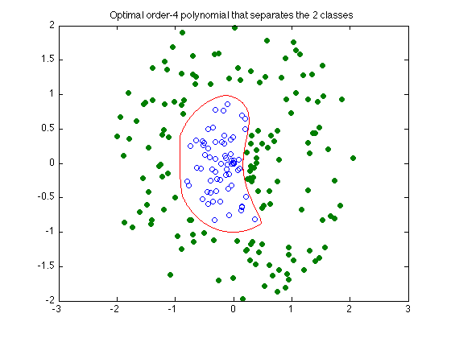

Polynomial discrimination
rand('state',0);
N = 100;
M = 120;
X = 2 * rand(2,N) - 1;
X = X * diag(0.9*rand(1,N)./sqrt(sum(X.^2)));
Y = 2 * rand(2,M) - 1;
Y = Y * diag((1.1+rand(1,M))./sqrt(sum(Y.^2)));
d = sqrt(sum((X-[1.1;0]*ones(1,N)).^2));
Y = [ Y, X(:,d<0.9) ];
X = X(:,d>1);
N = size(X,2);
M = size(Y,2);
p1 = [0,0,1,0,1,2,0,1,2,3,0,1,2,3,4]';
p2 = [0,1,1,2,2,2,3,3,3,3,4,4,4,4,4]'-p1;
np = length(p1);
op = ones(np,1);
monX = X(op,:) .^ p1(:,ones(1,N)) .* X(2*op,:) .^ p2(:,ones(1,N));
monY = Y(op,:) .^ p1(:,ones(1,M)) .* Y(2*op,:) .^ p2(:,ones(1,M));
fprintf(1,'Finding the optimal polynomial of order 4 that separates the 2 classes...');
cvx_begin
variables a(np) t(1)
minimize ( t )
a'*monX <= t;
a'*monY >= -t;
norm(a) <= 1;
cvx_end
fprintf(1,'Done! \n');
nopts = 2000;
angles = linspace(0,2*pi,nopts);
cont = zeros(2,nopts);
for i=1:nopts
v = [cos(angles(i)); sin(angles(i))];
l = 0; u = 1;
while ( u - l > 1e-3 )
s = (u+l)/2;
x = s * v;
if a' * ( x(op,:) .^ p1 .* x(2*op) .^ p2 ) > 0,
u = s;
else
l = s;
end
end;
s = (u+l)/2;
cont(:,i) = s*v;
end;
graph = plot(X(1,:),X(2,:),'o', Y(1,:), Y(2,:),'o', cont(1,:), cont(2,:), '-');
set(graph(2),'MarkerFaceColor',[0 0.5 0]);
title('Optimal order-4 polynomial that separates the 2 classes')
Finding the optimal polynomial of order 4 that separates the 2 classes...
Calling sedumi: 227 variables, 16 equality constraints
For improved efficiency, sedumi is solving the dual problem.
------------------------------------------------------------
SeDuMi 1.21 by AdvOL, 2005-2008 and Jos F. Sturm, 1998-2003.
Alg = 2: xz-corrector, Adaptive Step-Differentiation, theta = 0.250, beta = 0.500
eqs m = 16, order n = 214, dim = 228, blocks = 2
nnz(A) = 3391 + 0, nnz(ADA) = 256, nnz(L) = 136
it : b*y gap delta rate t/tP* t/tD* feas cg cg prec
0 : 5.63E+02 0.000
1 : -6.06E-01 1.89E+02 0.000 0.3357 0.9000 0.9000 2.52 1 1 1.1E+02
2 : -1.71E-01 1.20E+02 0.000 0.6328 0.9000 0.9000 5.15 1 1 2.1E+01
3 : -2.99E-02 6.92E+01 0.000 0.5787 0.9000 0.9000 4.77 1 1 5.3E+00
4 : -1.28E-02 2.82E+01 0.000 0.4080 0.9000 0.9000 1.58 1 1 1.9E+00
5 : -6.88E-03 1.29E+01 0.000 0.4568 0.9000 0.9000 0.78 1 1 1.1E+00
6 : -1.75E-03 4.02E+00 0.000 0.3114 0.9000 0.9000 0.04 1 1 1.1E+00
7 : 7.71E-03 2.70E+00 0.000 0.6730 0.9000 0.9000 -0.38 1 1 7.2E-01
8 : 2.35E-02 1.70E+00 0.000 0.6271 0.9000 0.9000 0.62 1 1 4.5E-01
9 : 3.33E-02 9.54E-01 0.000 0.5629 0.9000 0.9000 0.61 1 1 2.8E-01
10 : 3.56E-02 3.00E-01 0.000 0.3143 0.9000 0.9000 0.75 1 1 9.7E-02
11 : 3.80E-02 1.42E-01 0.000 0.4736 0.9000 0.9000 0.67 1 1 5.3E-02
12 : 3.92E-02 7.55E-02 0.000 0.5318 0.9000 0.9000 0.68 1 1 3.1E-02
13 : 4.01E-02 4.32E-02 0.000 0.5719 0.9000 0.9000 0.61 1 1 2.1E-02
14 : 4.05E-02 2.08E-02 0.000 0.4813 0.9000 0.9000 0.73 1 1 1.0E-02
15 : 4.08E-02 1.01E-02 0.000 0.4849 0.9000 0.9000 0.70 1 1 5.7E-03
16 : 4.09E-02 2.22E-03 0.000 0.2200 0.9000 0.9000 0.91 1 1 1.3E-03
17 : 4.10E-02 1.76E-04 0.000 0.0795 0.9900 0.9900 0.95 1 1 1.0E-04
18 : 4.10E-02 4.65E-06 0.000 0.0263 0.9900 0.9901 1.00 1 1 2.5E-06
19 : 4.10E-02 9.10E-07 0.000 0.1959 0.9035 0.9000 1.00 1 1 5.2E-07
20 : 4.10E-02 1.09E-07 0.000 0.1199 0.9109 0.9000 1.00 1 1 8.1E-08
21 : 4.10E-02 2.01E-08 0.000 0.1839 0.9101 0.9000 1.00 2 2 1.8E-08
22 : 4.10E-02 5.18E-09 0.047 0.2582 0.9180 0.9000 1.00 2 2 5.9E-09
iter seconds digits c*x b*y
22 0.1 8.2 4.0993225471e-02 4.0993225182e-02
|Ax-b| = 4.7e-09, [Ay-c]_+ = 0.0E+00, |x|= 5.6e-01, |y|= 1.0e+00
Detailed timing (sec)
Pre IPM Post
1.000E-02 9.000E-02 0.000E+00
Max-norms: ||b||=1, ||c|| = 1,
Cholesky |add|=0, |skip| = 0, ||L.L|| = 34961.4.
------------------------------------------------------------
Status: Solved
Optimal value (cvx_optval): -0.0409932
Done!
